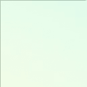

<!doctype html>
<html>
<head>
    <meta charset="utf-8">
    <title>VR</title>
    <script src="https://aframe.io/releases/0.8.2/aframe.min.js"></script>
    <style type="text/css">
        @font-face {
            font-family: "Ionicons";

            src: url("assets/fonts/ionicons.eot?v=2.0.1");
            src: url("assets/fonts/ionicons.eot?v=2.0.1#iefix") format("embedded-opentype"), url("assets/fonts/ionicons.ttf?v=2.0.1") format("truetype"), url("assets/fonts/ionicons.woff?v=2.0.1") format("woff"), url("assets/fonts/ionicons.svg?v=2.0.1#Ionicons") format("svg");

            font-weight: normal;
            font-style: normal
        }

        body {
            font-family: Ionicons;
        }

        .visuallyhidden {
            position: absolute;
            display: block;
            border: 0;
            clip: rect(0 0 0 0);
            height: 1px;
            width: 1px;
            margin: -1px;
            padding: 0;
            overflow: hidden;
        }
    </style>

    <script src="js/aframe-gui.js"></script>
    <script>
        (function () {

            // Optimization for Repeat Views
            if (sessionStorage.criticalFoftFontsLoaded) {
                console.log("fonts are already loaded");
                return;
            }

            var guiWebFont = new FontFaceObserver('Fira Sans');

            Promise.all([guiWebFont.load()]).then(function () {
                console.log("fonts are loaded");
                // Optimization for Repeat Views
                sessionStorage.criticalFoftFontsLoaded = true;
            });
        })();
    </script>


</head>
<body>
<a-scene auto-enter-vr="display:all">
    <a-assets>
        <!-- Text Canvas -->
        <canvas id="canvasObj" crossorigin="anonymous" webkit-playsinline=""></canvas>
        
        <!-- 			
         -->
        <a-asset-item id="iconfont" src="assets/fonts/ionicons.ttf"></a-asset-item>
    </a-assets>

    <a-light type="directional" color="#FFF" intensity="1" position="-1 1 2"></a-light>
    <a-light type="ambient" color="#ebd9e9"></a-light>
    <a-sky src="#gradient"></a-sky>
    <!--   		<a-image position="0 -.025 0" height="300" width="300" rotation="90 0 0" src="#ground" repeat="300 300" material="color:#ebd9e9"></a-image>
     -->

    <a-gui-flex-container
            flex-direction="column" justify-content="center" align-items="normal" component-padding="0.1"
            opacity="0.7" width="3.5" height="3.2"
            position="-5.64 2.24 -9.94" rotation="0 0 -2"
    >
        <a-gui-button
                width="2.5" height="0.75"
                onclick="RamallahButtonAction" key-code="32"
                value="Bethlehem"
                font-family="Arial"
                margin="0 0 0.05 0"
        >
        </a-gui-button>

        <a-gui-button
                width="2.5" height="0.75"
                onclick="RamallahButtonAction" key-code="32"
                value="Gaza"
                font-family="Arial"
                margin="0 0 0.05 0"
        >
        </a-gui-button>

        <a-gui-button
                width="2.5" height="0.75"
                onclick="SiegenButtonAction" key-code="32"
                value="Siegen"
                font-family="Arial"
                margin="0 0 0.05 0"
        >
        </a-gui-button>

    </a-gui-flex-container>

    <!-- Camera + cursor. -->
    <a-entity id="cameraRig" position="0 1.6 0">
        <a-camera look-controls wasd-controls position="0 0 0">
            <a-gui-cursor id="cursor"
                          raycaster="objects: [gui-interactable]"
                          fuse="true" fuse-timeout="1000"
                          design="dot"
            >
            </a-gui-cursor> <!-- /cursor -->
        </a-camera> <!-- /camera -->
    </a-entity>

</a-scene>


<script type="text/javascript">
    function RamallahButtonAction() {
        window.location.href = "ramallah.html";
    }

    function SiegenButtonAction() {
        window.location.href = "ramallah.html";
    }


    var scene = document.querySelector('a-scene');

    if (scene.hasLoaded) {
        run();
        stateChange();
    } else {
        scene.addEventListener('loaded', run);
    }

    function run() {
        // scene.enterVR();
        setTimeout(function(){
           document.querySelector('.a-enter-vr-button').click();
            }, 3000);

    }

</script>

</body>
</html>